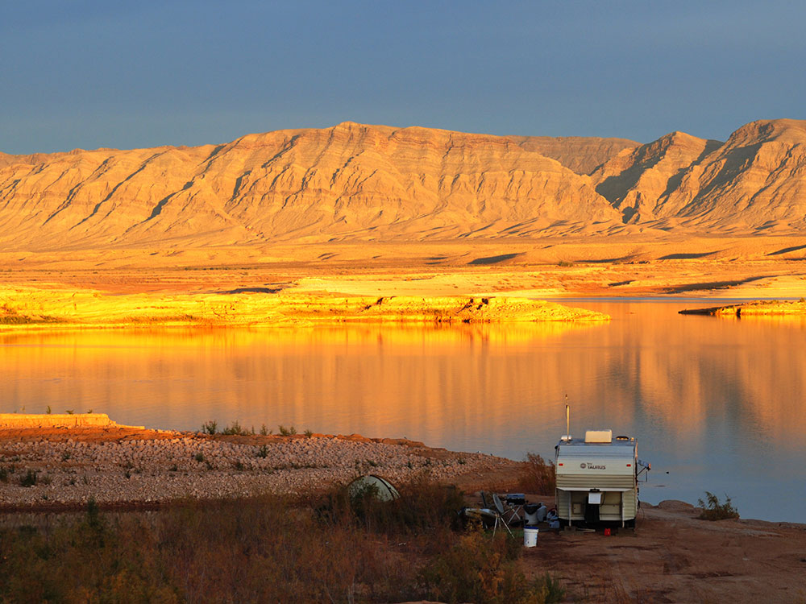
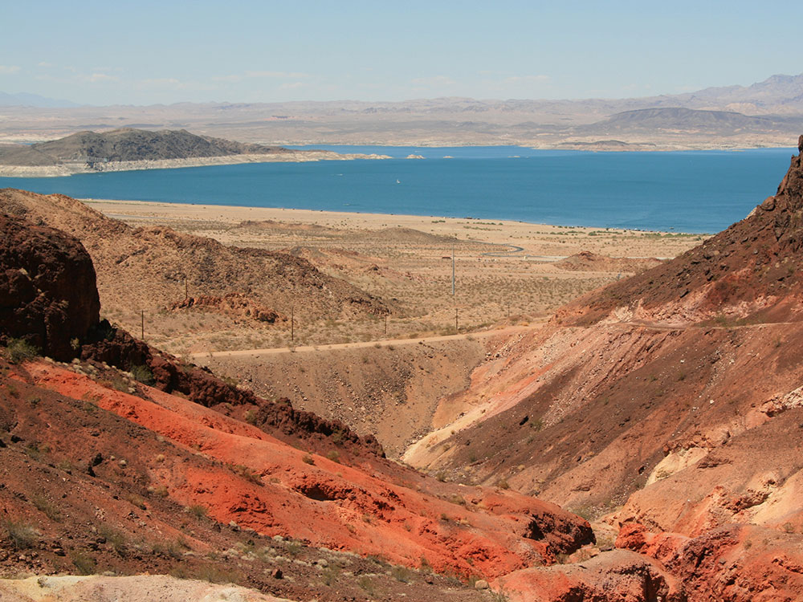
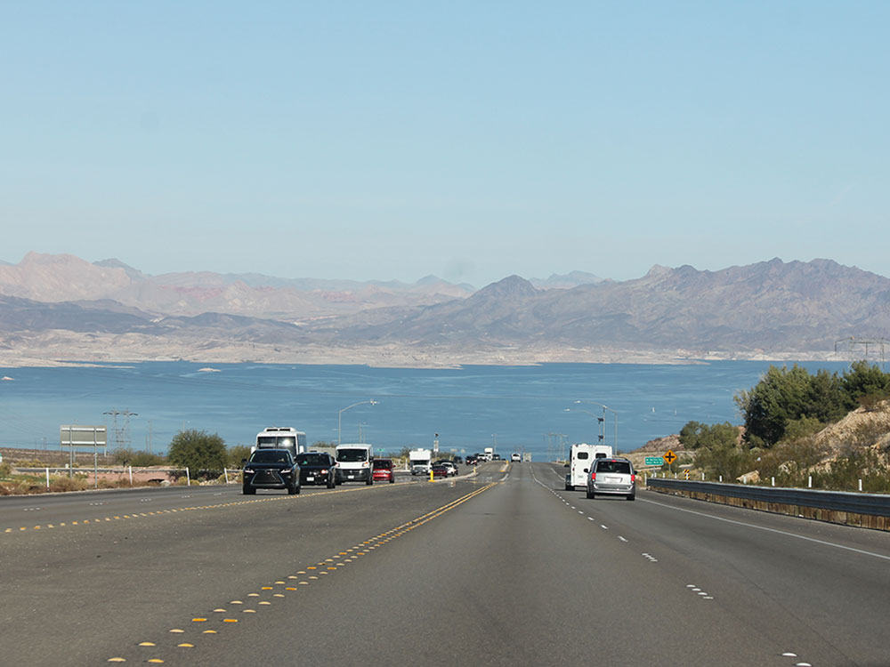
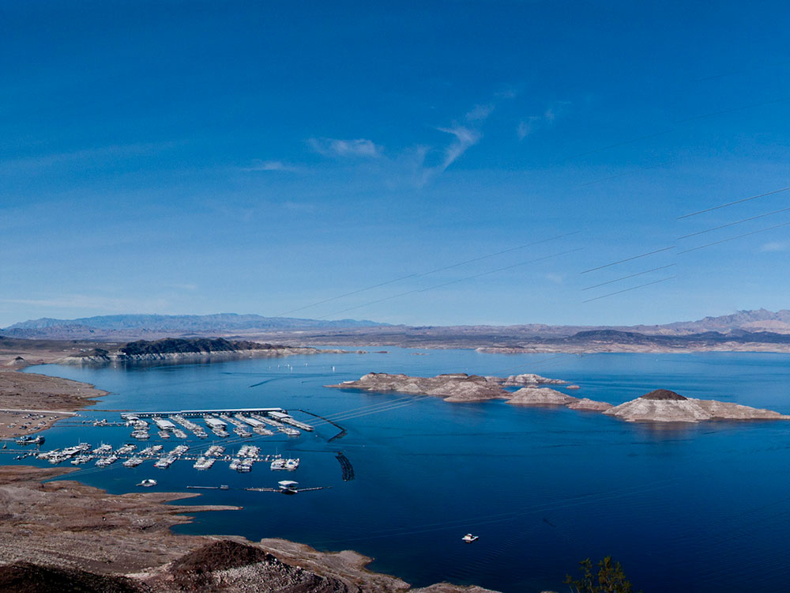
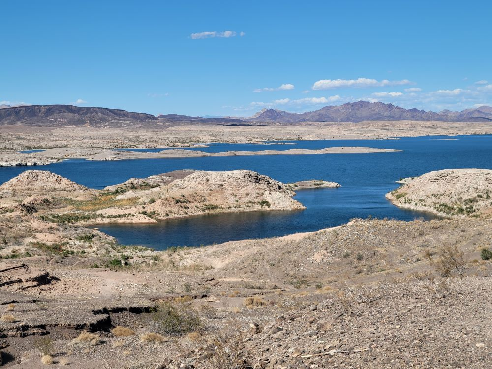
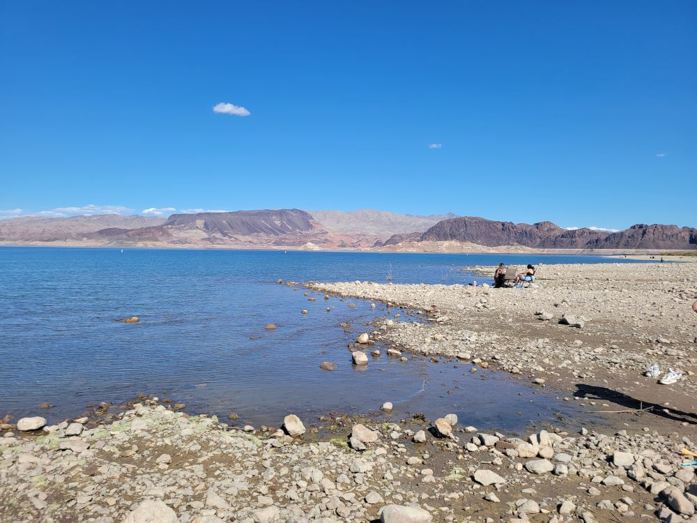
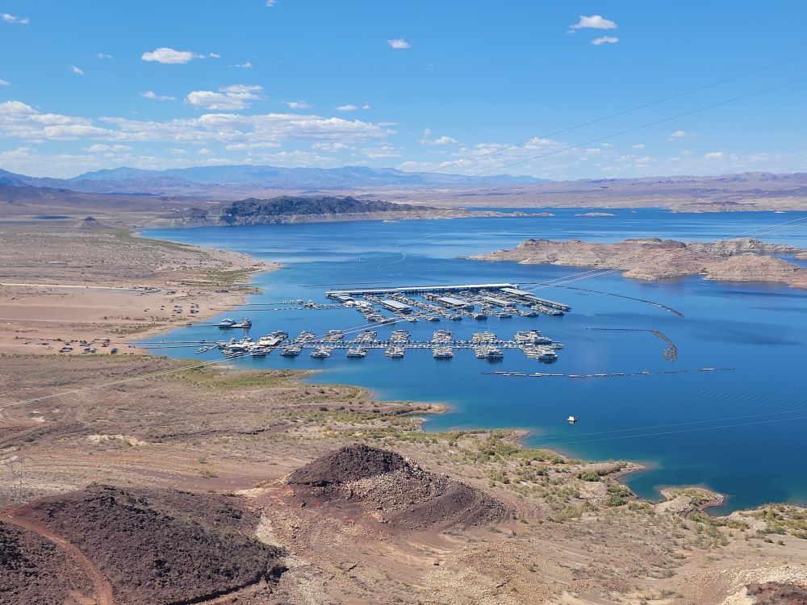
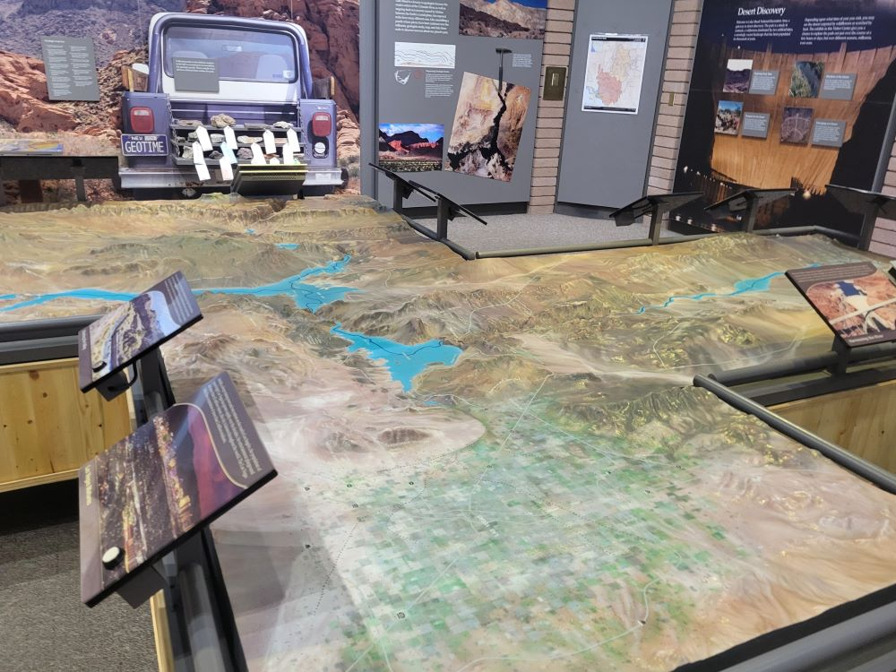

.jpg){kind=link}
Vast desert landscape surrounding two major reservoirs offers opportunities for boating, hiking, camping, and wildlife viewing year-round.
General Information
Visitor Center: Daily 9am to 4:30pm
Motorcycle: $20
Individual (bike/hike): $15
Lake Use Fee: $16 per vessel (1–7 days)
How to Get There
From Las Vegas (30 mi): Take US-93 S through Henderson and Boulder City, then follow signs to Lake Mead National Recreation Area.
Overview
Lake Mead National Recreation Area was established in 1964 as America's first national recreation area and protects more than 1.5 million acres of Mojave Desert, canyons and mountains surrounding two large reservoirs on the Colorado River: Lake Mead and Lake Mohave. Lake Mead was created by Hoover Dam in the 1930s and is the largest reservoir in the United States by volume when full, providing water and power to millions of people across the Southwest. The recreation area is famous for its blue water against rugged desert backdrops and is a major playground for boating, fishing, swimming, camping, hiking and sightseeing. Its closeness to Las Vegas and Hoover Dam makes it one of the most visited units of the National Park Service.
Access
Lake Mead sits about 30 minutes southeast of Las Vegas and is among the most accessible large recreation areas in the West. Visitors reach the main western shoreline by following US-93 through Henderson and Boulder City, or by taking Lakeshore Road toward Boulder Beach, and by driving Northshore Road past Valley of Fire State Park to the north end of the lake. Marinas and boat launches at Boulder Beach, Las Vegas Bay, Callville Bay and Echo Bay serve boaters, and Cottonwood Cove and Katherine Landing serve Lake Mohave to the south. Most visitors arrive by car, and many rent boats, jet skis or kayaks at marinas or from nearby outfitters.
Seasons
Lake Mead is open year-round, with each season serving different activities. Spring and fall bring comfortable temperatures for hiking, camping and boating. Summer is hot, often well above 100°F, and is the busiest time for swimming, boating and water sports, but trails can be dangerous in the heat. Winter is mild and quiet, with excellent weather for hiking and scenic drives. Water levels change with drought and runoff, so boat ramps, beaches and some campgrounds can close or move, and the National Park Service may restrict some canyon hikes in summer heat.
Things to Do
Explore America's First National Recreation Area
Lake Mead National Recreation Area includes two huge lakes, desert mountains, colorful canyons and dozens of coves. Scenic drives such as Northshore Road and Lakeshore Road provide easy access to overlooks, beaches and picnic areas.
Enjoy Boating and Water Sports on Lake Mead
Boating, fishing, swimming, kayaking, paddleboarding and houseboating are among the most popular activities. Marinas provide rentals, launch ramps and supplies, and calm coves are ideal for anchoring or paddling.
Visit Hoover Dam
Hoover Dam, a National Historic Landmark and engineering marvel, is at the southwest end of the lake. Visitors can walk across the dam, tour the powerplant, or drive across the Mike O'Callaghan-Pat Tillman Memorial Bridge for sweeping views.
Discover Desert Wildlife and Scenic Landscapes
The Mojave Desert around the lake supports desert bighorn sheep, wild burros, coyotes, desert tortoises and many birds. Wildflowers, colorful geology and dramatic sunsets make the scenery equally memorable.
Explore Historic Railroad and Mining Sites
The old railroad that supplied Hoover Dam construction, and the remnants of early mining and settlement, provide a glimpse of the region's past. The Historic Railroad Trail is an excellent way to experience that heritage.
Top Trails
Historic Railroad Trail
Length: Approximately 7.5 miles round trip
Elevation Gain: Minimal
Difficulty: Easy
One of the recreation area's most popular hikes, this trail follows the route used during the construction of Hoover Dam. Visitors pass through large railroad tunnels while enjoying spectacular views of Lake Mead and the surrounding desert landscape.
Liberty Bell Arch Trail
Length: Approximately 2 miles round trip
Elevation Gain: Approximately 300 feet
Difficulty: Moderate
This scenic desert hike leads to Liberty Bell Arch, a striking natural sandstone arch located in a rugged canyon. The route features colorful rock formations and excellent photography opportunities.
Gold Strike Hot Springs Trail
Length: Approximately 4.5 miles round trip
Elevation Gain: Significant
Difficulty: Strenuous
This challenging canyon adventure leads hikers through a series of rugged narrows, boulder scrambles and hot spring pools before reaching the Colorado River. It is one of the area's most adventurous hikes and is best avoided in hot weather.
River Mountains Loop Trail
Length: Approximately 34 miles loop
Elevation Gain: Moderate
Difficulty: Moderate
This paved multi-use trail circles the River Mountains and connects Lake Mead with nearby communities. It is popular with cyclists, runners and walkers seeking scenic desert and mountain views.
Visitor Centers
The Lake Mead Visitor Center, near Boulder City on the western side of the lake, is the main information stop and is open daily. It has exhibits on the lake's natural and cultural history, a park film, a bookstore, restrooms and rangers who can provide maps, boating information and current road and trail conditions. Additional ranger stations and contact points are found at Katherine Landing near Bullhead City and Cottonwood Cove on Lake Mohave. Hoover Dam also has its own visitor center, which is operated separately by the Bureau of Reclamation.
Camping and Lodging
The National Park Service operates campgrounds at several locations, including Boulder Beach, Callville Bay, Echo Bay, Las Vegas Bay, Temple Bar, Cottonwood Cove and Katherine Landing, with options for tents and RVs, and backcountry camping is permitted along many shorelines. Some marinas offer motel-style rooms or houseboat rentals, which are a popular way to stay on the water. Boulder City, about 15 minutes away, has hotels such as the historic Boulder Dam Hotel and the Hoover Dam Lodge, and Henderson has resort and chain hotels including Green Valley Ranch. Las Vegas, about 30 minutes away, has the widest range of lodging, and Laughlin is convenient for Lake Mohave. Check each property's website for current availability.
This article uses material from the Wikipedia article and official pages for Lake Mead National Recreation Area, National Park Service: Lake Mead National Recreation Area, AllTrails: Lake Mead National Recreation Area, Wikipedia: Lake Mead, released under the Creative Commons Attribution-Share-Alike License 3.0.
Featured Locations

Inklein, CC BY-SA 3.0, via Wikimedia Commons; Image Size Adjusted

Arizona Hot Springs
A rugged canyon hike leading to a series of naturally heated geothermal pools and cascading warm waterfalls set within a narrow desert slot canyon.
Inklein, CC BY-SA 3.0, via Wikimedia Commons; Image Size Adjusted
Boulder Beach
Popular sandy shoreline recreation area featuring swimming, picnicking, boating access, and expansive views of blue water set against rugged desert mountains.
Inklein, CC BY-SA 3.0, via Wikimedia Commons; Image Size Adjusted
Goldstrike Hot Spring
A rugged desert canyon trail leading to geothermal pools where mineral-rich hot spring water cascades over terraced rock formations into the Colorado River below.
Inklein, CC BY-SA 3.0, via Wikimedia Commons; Image Size Adjusted
Lake Mead Lakeview Overlook
Panoramic roadside viewpoint offering sweeping views of a vast desert reservoir, rugged mountains, and the iconic “bathtub ring” marking historic water levels.
Panoramic roadside viewpoint offering sweeping views of a vast desert reservoir, rugged mountains, and the iconic “bathtub ring” marking historic water levels.



.jpg){kind=link}









